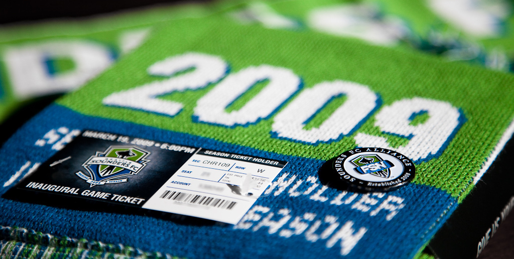

In 2007, Hanauer teamed up with Hollywood producer Joe Roth to make another bid for MLS expansion into Seattle, at a cost of $30 million. Paul Allen, whose First and Goal company operated Qwest Field (now CenturyLink Field), joined the ownership group that same year, making the bid the most promising yet for Seattle. During the first week of November 2007, rumors began to build that MLS would be announcing an expansion into Seattle the following week, and that the ownership group had taken on a fourth member, TV personality Drew Carey. In a press conference on November 13, 2007, it was announced that Seattle had been awarded an expansion team. The announcement marked the return of top-level soccer to Seattle for the first time since the dissolution of its North American Soccer League (NASL) team in 1983. The announcement also meant that the Seattle Sounders of the USL First Division would play its final season the year before the new MLS franchise was formed.
"Seattle Sounders FC" was announced as the team name on April 7, 2008, along with the team logo, colors and badge design, in a presentation held at the Space Needle. Sigi Schmid was introduced as the club's first head coach on December 16, 2008, after leaving the Columbus Crew following their MLS Cup victory.
Several players are standing together with one lifting a large trophy upward. Players celebrate after winning the 2009 U.S. Open Cup. Seattle Sounders FC, the league's 15th team, began play in the 2009 season. All 22,000 season ticket packages offered by the club for its inaugural season were sold, giving them the most season ticket holders in MLS. The club played its first home match on March 19, 2009 in front of a sold-out crowd of 32,523, defeating the New York Red Bulls 3–0. During the pre-match ceremonies, the first Golden Scarf was awarded to MLS Commissioner Don Garber. Seattle was the first MLS expansion team to win its first three matches, and they did so with a shutout in each. The club set a state record for attendance at a soccer match on August 5, 2009, when 66,848 attended a friendly match with FC Barcelona,[27] a record which was later broken when they hosted Manchester United in front of 67,052 fans,[28] and later in the 2019 MLS Cup against Toronto FC with 69,274 in attendance.